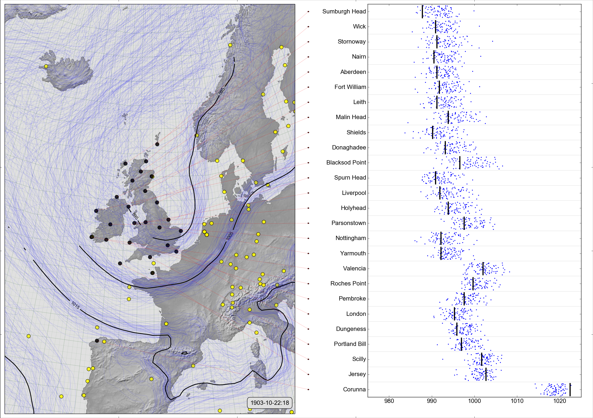

Scatter-contour plot¶

{kind=link}
On the left, a spaghetti-contour plot of 20CRv3 MSLP for October 22nd, 1903 (at 6pm). On the right, comparison of the ensemble values (blue dots), with independent observations from the Daily Weather Reports (black lines).
This style of figure validates the reanalysis ensemble by comparing ensemble values at the times and places where we have independent observations, with the independent observations. The reanalysis is well-calibrated if the observation values mostly lie within the cloud of ensemble values, and precise if the ensemble spread around the observation value is small.
Code to make the figure¶
Collect the data (prmsl ensemble and observations from 20CR2c for 1903):
#!/usr/bin/env python
import IRData.twcr as twcr
import datetime
dte=datetime.datetime(1903,10,1)
for version in (['4.5.1']):
twcr.fetch('prmsl',dte,version=version)
twcr.fetch_observations(dte,version=version)
Script to make the figure:
#!/usr/bin/env python
# Use the DWR stations to validate 20CRv3
import math
import datetime
import numpy
import pandas
import iris
import iris.analysis
import matplotlib
from matplotlib.backends.backend_agg import \
FigureCanvasAgg as FigureCanvas
from matplotlib.figure import Figure
from matplotlib.patches import Circle
import cartopy
import cartopy.crs as ccrs
import Meteorographica as mg
import IRData.twcr as twcr
import DWR
# Date to show
year=1903
month=10
day=22
hour=18
dte=datetime.datetime(year,month,day,hour)
# Landscape page
fig=Figure(figsize=(22,22/math.sqrt(2)), # Width, Height (inches)
dpi=100,
facecolor=(0.88,0.88,0.88,1),
edgecolor=None,
linewidth=0.0,
frameon=False,
subplotpars=None,
tight_layout=None)
canvas=FigureCanvas(fig)
font = {'family' : 'sans-serif',
'sans-serif' : 'Arial',
'weight' : 'normal',
'size' : 16}
matplotlib.rc('font', **font)
# UK-centred projection
projection=ccrs.RotatedPole(pole_longitude=177.5, pole_latitude=35.5)
scale=12
extent=[scale*-1,scale,scale*-1*math.sqrt(2),scale*math.sqrt(2)]
# On the left - spaghetti-contour plot of original 20CRv3
ax_left=fig.add_axes([0.005,0.01,0.495,0.98],projection=projection)
ax_left.set_axis_off()
ax_left.set_extent(extent, crs=projection)
ax_left.background_patch.set_facecolor((0.88,0.88,0.88,1))
mg.background.add_grid(ax_left)
land_img_left=ax_left.background_img(name='GreyT', resolution='low')
# 20CRv3 data
prmsl=twcr.load('prmsl',dte,version='4.5.1')
# 20CRv3 data
prmsl=twcr.load('prmsl',dte,version='4.5.1')
obs_t=twcr.load_observations_fortime(dte,version='4.5.1')
# Filter to those assimilated and near the UK
obs_s=obs_t.loc[((obs_t['Latitude']>0) &
(obs_t['Latitude']<90)) &
((obs_t['Longitude']>240) |
(obs_t['Longitude']<100))].copy()
# Plot the 20CR observations
mg.observations.plot(ax_left,obs_s,radius=0.15)
# Get the DWR observations for that afternoon
obs=DWR.load_observations('prmsl',
dte-datetime.timedelta(hours=0.1),
dte+datetime.timedelta(hours=0.1))
mg.observations.plot(ax_left,obs,
radius=0.15,facecolor='black',
lat_label='latitude',
lon_label='longitude')
# PRMSL spaghetti plot
mg.pressure.plot(ax_left,prmsl,scale=0.01,type='spaghetti',
resolution=0.25,
levels=numpy.arange(875,1050,10),
colors='blue',
label=False,
linewidths=0.1)
# Add the ensemble mean - with labels
prmsl_m=prmsl.collapsed('member', iris.analysis.MEAN)
prmsl_s=prmsl.collapsed('member', iris.analysis.STD_DEV)
prmsl_m.data[numpy.where(prmsl_s.data>300)]=numpy.nan
mg.pressure.plot(ax_left,prmsl_m,scale=0.01,
resolution=0.25,
levels=numpy.arange(875,1050,10),
colors='black',
label=True,
linewidths=2)
mg.utils.plot_label(ax_left,
'%04d-%02d-%02d:%02d' % (year,month,day,hour),
fontsize=16,
facecolor=fig.get_facecolor(),
x_fraction=0.98,
horizontalalignment='right')
# Validation scatterplot on the right
stations=obs.name.values
ax_right=fig.add_axes([0.62,0.05,0.36,0.94])
# x-axis
xrange=[975,1025]
ax_right.set_xlim(xrange)
ax_right.set_xlabel('')
# y-axis
ax_right.set_ylim([1,len(stations)+1])
y_locations=[x+0.5 for x in range(1,len(stations)+1)]
ax_right.yaxis.set_major_locator(
matplotlib.ticker.FixedLocator(y_locations))
ax_right.yaxis.set_major_formatter(
matplotlib.ticker.FixedFormatter(
[DWR.pretty_name(s) for s in stations]))
# Custom grid spacing
for y in range(0,len(stations)):
ax_right.add_line(matplotlib.lines.Line2D(
xdata=xrange,
ydata=(y+1,y+1),
linestyle='solid',
linewidth=0.2,
color=(0.5,0.5,0.5,1),
zorder=0))
latlon={}
for station in stations:
latlon[station]=DWR.get_station_location(obs,station)
# Plot the station pressures
for y in range(0,len(stations)):
station=stations[y]
mslp=obs[obs.name==station].value.values[0]
ax_right.add_line(matplotlib.lines.Line2D(
xdata=(mslp,mslp), ydata=(y+1.1,y+1.9),
linestyle='solid',
linewidth=3,
color=(0,0,0,1),
zorder=1))
# for each station, plot the reanalysis ensemble at that station
interpolator = iris.analysis.Linear().interpolator(prmsl,
['latitude', 'longitude'])
for y in range(len(stations)):
station=stations[y]
ensemble=interpolator([latlon[station]['latitude'],
latlon[station]['longitude']])
ax_right.scatter(ensemble.data/100.0,
numpy.linspace(y+1.1,y+1.9,
num=len(ensemble.data)),
25,
'blue', # Color
marker='.',
edgecolors='face',
linewidths=0.0,
alpha=1.0,
zorder=0.5)
# Join each station name to its location on the map
# Need another axes, filling the whole fig
ax_full=fig.add_axes([0,0,1,1])
ax_full.patch.set_alpha(0.0) # Transparent background
def pos_left(idx):
station=stations[idx]
ll=latlon[station]
rp=ax_left.projection.transform_points(ccrs.PlateCarree(),
numpy.asarray(ll['longitude']),
numpy.asarray(ll['latitude']))
new_lon=rp[:,0]
new_lat=rp[:,1]
result={}
aspect=math.sqrt(2)
result['x']=0.005+0.495*((new_lon-(scale*-1))/(scale*2))
result['y']=0.01+0.98*((new_lat-(scale*aspect*-1))/
(scale*2*aspect))
return result
# Label location of a station in ax_full coordinates
def pos_right(idx):
result={}
result['x']=0.52
result['y']=0.05+(0.94/len(stations))*(idx+0.5)
return result
for i in range(len(stations)):
p_left=pos_left(i)
p_right=pos_right(i)
ax_full.add_patch(Circle((p_right['x'],
p_right['y']),
radius=0.001,
facecolor=(1,0,0,1),
edgecolor=(0,0,0,1),
alpha=1,
zorder=1))
ax_full.add_line(matplotlib.lines.Line2D(
xdata=(p_left['x'],p_right['x']),
ydata=(p_left['y'],p_right['y']),
linestyle='solid',
linewidth=0.2,
color=(1,0,0,0.99),
zorder=1))
# Output as png
fig.savefig('Scatter+contour_%04d%02d%02d%02d.png' %
(year,month,day,hour))